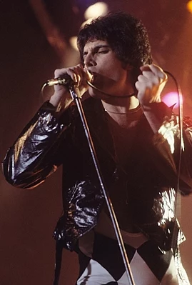

Queen rock group
The member of group:
- Fredie Mercury frontman
 - Brian May guitar
- Roger Taylor drum
- John Deakon bass guitar

1968–1971: Foundations
The founding members of Queen met in West London during the late 1960s. Guitarist Brian May had built his own guitar with his father in 1963, and formed the group 1984 (named after Orwell's novel) the following year with singer Tim Staffell.[1] May left the group in early 1968 to focus on his degree in Physics and Infrared Astronomy at Imperial College and find a group that could write original material.[2] He formed the group Smile with Staffell (now playing bass) and keyboardist Chris Smith.[3] To complete the line-up, May placed an advertisement on a college notice board for a "Mitch Mitchell/Ginger Baker type" drummer; Roger Taylor, a young dental student, auditioned and got the job.[4] Smith left the group in early 1969, immediately before a gig at the Royal Albert Hall with Free and the Bonzo Dog Doo-Dah Band.[5] While attending Ealing Art College in west London, Staffell became friends with fellow student Freddie Bulsara, who was from Zanzibar and of Indian Parsi descent.[6][7] Bulsara had studied fashion design for a year before switching to graphic art and design,[8] and soon became a keen fan of Smile. He asked if he could join the group as lead singer, but May felt Staffell would not give up that role.[9] He also ran a stall in Kensington Market with Taylor.[10]
Best Songs
- Bohemian rapsody
- Mercury
- We will rock you
- Mercury
- Another One Bites the Dust
- Deacon
- Don't Stop Me Now
- Mercury
- I Want to Break Free
- Deakon
- Radio Ga Ga
- Mercury & Taylor
- The Show Must Go On
- May